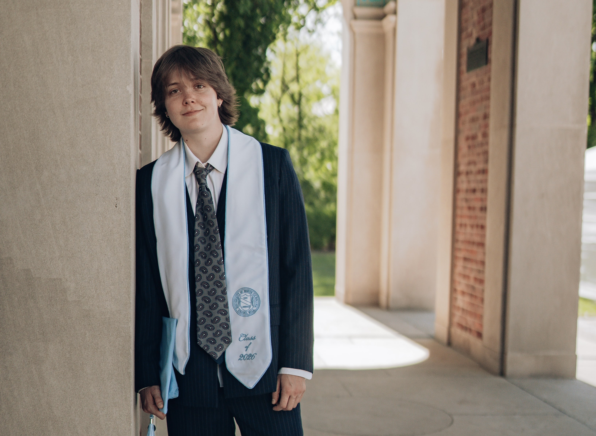

Barnes Haddix
Software Engineer | Systems & Security

barneshaddix@gmail.com
Skills
- Langauges: C/C++, Java, Python, Rust, HTML/CSS/js
- Systems & Infrastructure: Linux, Bash/Python scripting, Containerization (Docker, Podman), Virtualization (Proxmox, VMware's ESXi), Networking, Operating Systems
- Security & Networking: Network Security, Cross-Domain Solutions, Cryptography, Formal Verification, Secure Communications
- Tools & Frameworks: Git, ROS, Apache Nifi, Postgres
- ML/Data: Pytorch, Tensorflow, Hugging Face, ONNX, Deep learning
About Me
I'm a computer scientist and engineer building reliable, secure, and socially impactful technology.My background spans software engineering, systems research, cybersecurity, and machine learning. I hold degrees in Computer Science and Mathematics from UNC Chapel Hill, where I conducted research in real-time systems and defended an honors thesis on the EEVDF resource allocation algorithm, Linux's current default scheduler. I also have industry experience in cybersecurity engineering at Owl Cyber Defense, where I worked on cross-domain security solutions for U.S. government applications.
I'm interested in software engineering, infrastructure, DevOps, and systems engineering opportunities in New York City.
Publications
- On the Necessity of Real-Time Principles in GPU-Driven Autonomous Robots . Syed W. Ali, Angelos Angelopoulos, Denver Massey, Sarah Haddix, Alexander Georgiev, Joseph Goh, Rohan Wagle, Prakash Sarathy, James H. Anderson, and Ron Alterovitz. In Proceedings of the 2025 IEEE International Conference on Robotics and Automation (ICRA), March 2025.
Experience
-
Owl Cyber Defense — Engineering Intern
(June 2025 – June 2026)
- Worked in Rust and Java to develop cross-domain network security solutions for U.S. government cybersecurity applications.
- Contributed to the initial development of secure chat capabilities for existing Owl Cyber Defense products, including the V2CDS, an NCDSMO Baseline Certified technology. Used Apache NiFi and OpenFire to handle streaming XML/XMPP data.
- Developed a PostgreSQL-backed dashboard, wrote Python testing scripts, and managed Linux environments, virtual machines, and Docker and Podman containers.
- Worked on developing a secure RDP client/server in Rust for use in classified environments.
- Held a U.S. Secret clearance.
-
UNC Chapel Hill — Undergraduate Research Assistant
(April 2024 – June 2026)
- Worked with Computer Science Department Chair Dr. James H. Anderson's Real-Time Systems Research Group, focusing on real-time operating systems, AI, and GPU scheduling.
- Assisted graduate students in conducting experiments, including exploring GPU memory constraints and overload behaviors, and provided feedback and proofreading on research papers.
- Co-authored a real-time robotics paper accepted at ICRA 2025. Developed and modified software in Python and C++ to control a simulated drone leveraging Linux and ROS, and optimized a path-planning neural network using TensorFlow and ONNX.
-
Axai Tech — Project Intern
(June 2024)
- Developed and applied deep learning models for protein sequence analysis and generation, supporting research into minimally invasive cancer therapies.
- Developed and trained LSTM-based architectures and transformer models using PyTorch and Hugging Face.
- Performed data preprocessing, cleaning, transformation, and exploratory analysis using Python, NumPy, and Pandas.
-
Scale AI — Software Engineer, AI Training Data
(May 2024 – Present)
- Contribute coding-related AI training data, primarily in Java, Python, and Swift, used to fine-tune modern LLMs.
-
Lenovo — Intern
(May 2021 – June 2021)
- Collaborated with a team of three other interns to compile and present research on emerging technologies, including NFTs and cryptocurrencies, to a Lenovo executive.
Education
-
University of North Carolina at Chapel Hill
Chapel Hill, North Carolina, USA
B.S. Computer Science, B.S. Mathematics (August 2022 – May 2026)- Graduated with Honors in Computer Science; completed and defended a senior honors thesis.
- Graduated with Distinction (cumulative GPA of 3.50 or higher).
- Member of Honors Carolina, an academic honors program admitting fewer than 10% of each incoming class.
- Dean's List: Fall 2022 – Spring 2026 (8 semesters).
- Major GPA: 3.90/4.00; Overall GPA: 3.79/4.00.
Projects & Activities
- Honors Thesis: A Proportional Share Resource Allocation Algorithm For Real-Time, Time-Shared Systems: A Closer Look . Honors thesis examining the correctness and implementation of the Earliest Eligible Virtual Deadline First (EEVDF) scheduling algorithm in the Linux kernel. Successfully defended with Honors. [Defense Slides]
- Formal Verification: Formal Verification of Onion Franking Security Properties Using Tamarin . Semester-long project in COMP 590/637 to formally verify security properties of a metadata-hiding cryptographic protocol enabling anonymous abuse reporting, proposed in Onion Franking: Abuse Reports for Mix-Based Private Messaging .
- UNC AI Club: Developed a computer vision model for real-time wildfire detection, optimized with TensorRT for deployment on a Jetson-powered drone. Implemented a messaging protocol to stream live fire detection data from the drone's camera to a remote server.
- Association for Women in Mathematics: Served as President of UNC's chapter of the Association of Women in Mathematics. Organized and publicized study nights, alumni and faculty panels, and social events to foster community within the mathematics department.
- Undergraduate CyberSecurity Engagement Program: Selected for UNC's joint program with Nagoya University in Japan. Participated in workshops, lectures, and site visits exploring the intersection of cybersecurity, national security, and foreign policy with industry and government leaders.
- Carolina App Team: Awarded Best Functionality at the Spring 2024 Showcase for a fully functional recreation of the Shazam app using the ShazamKit API. Completed the two-semester iOS development program, building several functional iOS applications.
Pictures